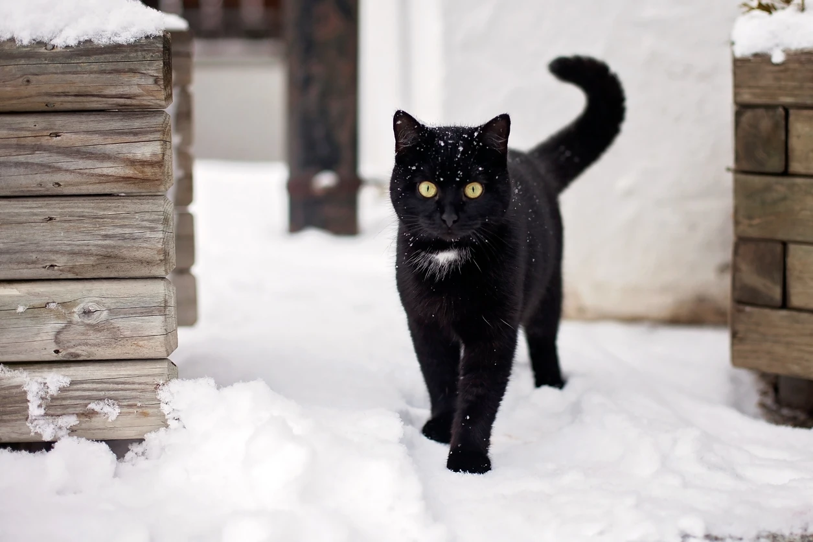

Cat

A Tabby cat in snowy weather
The hooked pappilae on cat's tongue act like a hairbrush to help clean and detangle fur.
A Tabby cat in snowy weather
The hooked pappilae on cat's tongue act like a hairbrush to help clean and detangle fur.